채널: 부의 나침반 | 길이: 27:27 | 날짜: 20260104
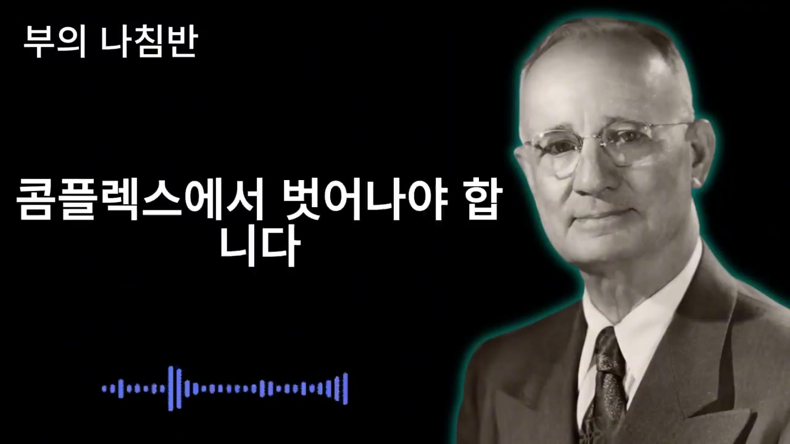
영상은 검은 배경, 오른쪽의 나폴레온 힐 흑백 초상, 초상 주변의 청록색 외곽광, 왼쪽 상단의 채널명 “부의 나침반”, 중앙의 큰 흰색 문구로 구성된다. 첫 화면에는 “콤플렉스에서 벗어나야 합니다”라는 문장이 크게 표시되어, 영상이 단순한 인간관계 조언이 아니라 기존의 자기인식과 습관을 끊어내라는 선언으로 시작함을 보여준다. 하단에는 파란색 오디오 파형이 있어 나레이션형 콘텐츠임을 시각적으로 강조한다.
내용상 도입부는 “정직이 최선의 방책”이라는 어린 시절의 교육을 정면으로 흔든다. 있는 그대로 보여주고 진심으로 대하면 언젠가는 통할 것이라고 믿어왔지만, 실제 삶에서 그런 순진한 정직함이 부와 존경을 가져왔는지 묻는다. 오히려 약점을 잡히고 이용당하며 후회만 남겼다면 이제 “착한 사람 콤플렉스”에서 벗어나야 한다고 말한다.
여기서 화자는 솔직함을 완전히 부정한다기보다 “무방비 상태의 솔직함”을 문제 삼는다. 인생 후반전에 필요한 것은 솔직함의 무장해제가 아니라 고도의 지혜가 담긴 위장술이라고 한다. 이 표현은 영상 전체의 핵심 방향을 결정한다. 즉, 남을 속여 해치는 거짓말이 아니라 자기 존엄을 지키기 위한 보호막으로서의 위장이다.
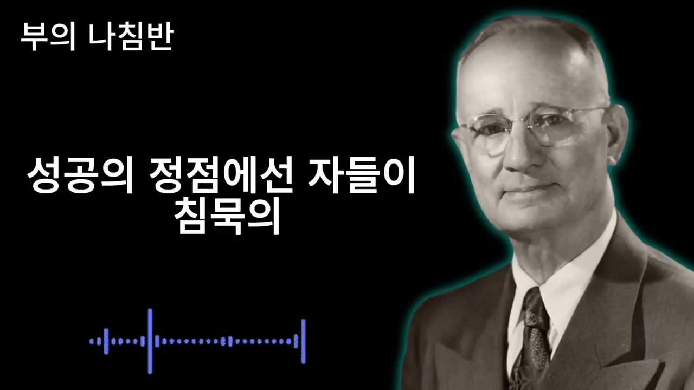
두 번째 구간은 타인을 영원히 자신의 편으로 만들기 위한 “가장 고차원적인 처세술이자 생존 전략”이라는 표현으로 위장술을 정당화한다. 99%의 사람들은 준비되지 않은 채 자기 패를 다 보여주고 패배를 자초한다고 말한다. 가난한 마음, 불안한 눈빛, 초라한 현실을 있는 그대로 드러내는 것은 겸손이 아니라 자살행위라고까지 표현한다.
화자는 세상이 약해 보이는 사람을 돕는 것이 아니라 짓밟는다고 본다. 나폴레온 힐을 인용하듯, 성공의 정점에 선 사람들은 침묵의 힘을 이용해 자신을 신비롭게 포장할 줄 안다고 한다. 그들은 세상이 보고 싶어 하는 강자의 모습만 보여준다. 이 “거룩한 속임수” 속에 승리의 비밀이 있다고 말한다.
이 구간의 핵심 지시는 약점과 결핍을 철저히 숨기라는 것이다. 그렇게 해야 세상이 비로소 당신을 두려워하고 존경하며 곁에 머물기를 간청하게 된다고 말한다. 타인의 평가와 존중은 실제 상태보다 표면에 드러나는 에너지와 태도에 반응한다는 관점이다.
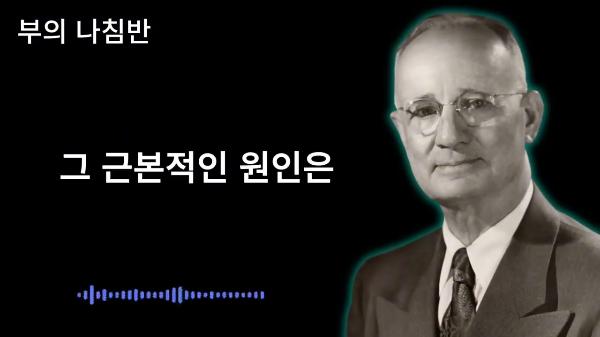
세 번째 구간은 자기 노출의 심리적 원인을 다룬다. 화자는 이 원리를 깨닫지 못하면 평생 남의 눈치만 보며 억울해하다가 생을 마감할지도 모른다고 경고한다. 대부분의 사람은 진리를 알면서도 실천하지 못한다. 입이 근질거리거나 누군가에게 위로받고 싶다는 얄팍한 마음 때문에 결정적 순간에 모든 것을 털어놓고 무너진다는 것이다.
근본 원인은 의지 부족이 아니라 무의식 깊은 곳에 뿌리박힌 착각이라고 설명한다. 사람의 내면에는 아직도 칭얼대며 위로받고 싶어 하는 어린아이가 살고 있다. 나이가 들고 사회적 지위가 생겼어도 누군가가 자신의 힘듦을 알아주고 고단한 삶을 어루만져주기를 바라는 기대심리가 남아 있다는 것이다. 화자는 바로 그 기대가 삶을 망친다고 말한다.
이 구간은 영상의 심리적 기둥이다. 위장술을 단순한 외부 전략이 아니라 내면의 유아적 욕구를 통제하는 훈련으로 본다. “나를 알아줘”라는 욕망이 타인에게 정보를 제공하고, 그 정보가 다시 나를 얕보게 만드는 무기가 된다는 구조다.
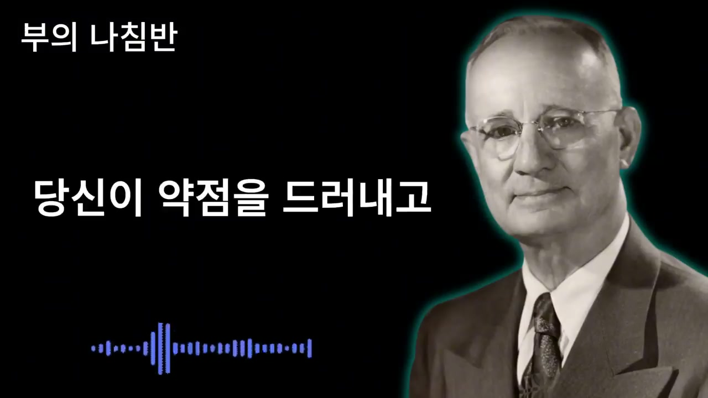
사람들은 흔히 솔직함이 인간관계의 미덕이라고 착각한다고 한다. 오래된 친구를 만나 술 한잔 기울이며 사업의 어려움, 배우자의 야속함, 자식 문제를 구구절절 털어놓는다. 그렇게 속내를 보이면 상대도 마음을 열고 더 깊은 유대감이 생길 것이라고 믿기 때문이다.
하지만 화자는 이것을 치명적인 오판으로 본다. 약점을 드러내고 고통을 호소할 때 상대는 겉으로는 고개를 끄덕이고 안타까운 표정을 지을 수 있다. 그러나 내면에서는 “나보다 더 못한 사람이 있다”는 비열한 위안을 얻고, 당신을 자신보다 아래 등급의 인간으로 분류한다고 한다. 그 순간부터 당신은 동등한 친구나 파트너가 아니라 동정의 대상 또는 부담스러운 존재로 전락한다.
이 주장은 인간관계를 매우 경쟁적이고 계급적인 장으로 본다. 동정은 존중이 아니며, 연민은 관계의 힘을 높이지 않는다는 메시지다. 화자는 타인이 나의 고통을 들어주는 순간조차 평가와 분류가 작동한다고 본다.
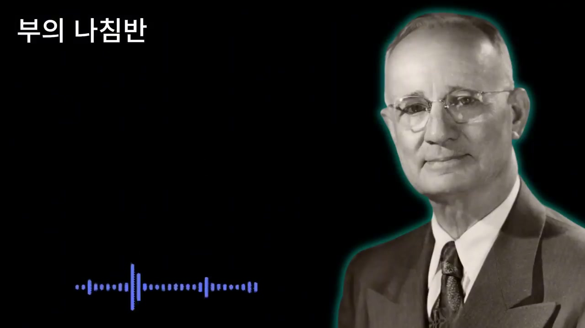
네 번째와 다섯 번째 구간은 하소연의 사회적 결과를 설명한다. 가난의 냄새와 불행의 기운을 풍기는 사람 곁에 오래 머물고 싶어 하는 사람은 없다고 말한다. 인간은 본능적으로 밝고 강하고 풍요로운 에너지에 끌린다. 구차한 현실을 토로할 때마다 주변의 귀인들은 하나둘 뒤로 물러나 떠난다는 것이다.
결국 곁에는 똑같이 신세 한탄을 늘어놓는 패배자들만 남는다고 한다. 화자는 이것을 “끼리끼리 모인다”는 유유상종의 잔인한 법칙이라고 부른다. 굳이 하지 않아도 될 말을 해서 스스로의 가치를 깎아내리는 이유는 두려움이라고 분석한다. 잊혀질까 봐, 무시당할까 봐, 혼자 뒤처질까 봐 “나 여기 있다”, “나 이렇게 힘들게 살고 있다”고 소리치는 것이다.
그러나 세상은 사정에 관심이 없고, 사람들이 관심 갖는 것은 오직 내가 그들에게 무엇을 줄 수 있는가라고 말한다. 이 대목은 영상의 가장 냉정한 인간관을 보여준다. 가치 제공 능력, 에너지, 태도만이 사람을 끌어당긴다는 주장이다.
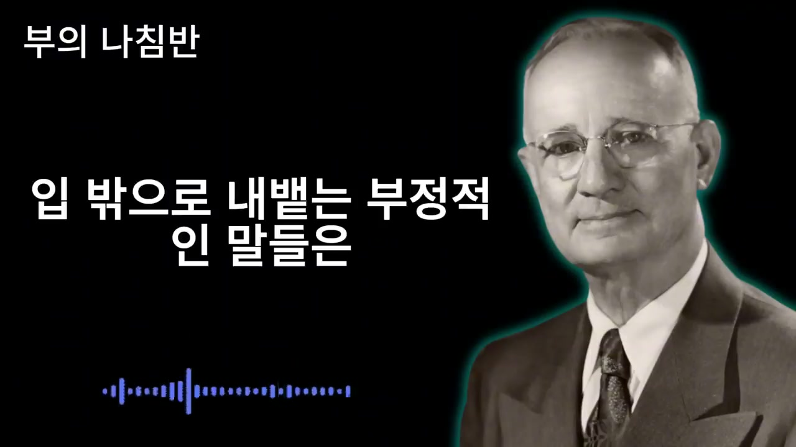
약한 모습을 보이는 순간 세상은 나를 먹잇감으로 인식한다고 한다. 사기꾼들은 외롭고 하소연하기 좋아하는 사람을 가장 먼저 노린다. 솔직함이 노후를 위협하는 칼날이 되어 돌아온다는 표현이 등장한다.
이어서 나폴레온 힐의 이름을 빌려 “가난과 실패는 자초하는 것”이라고 말한다. 스스로 불행하다고 떠벌리고 다니는데 어떻게 행운의 여신이 찾아오겠느냐는 논리다. 입 밖으로 내뱉는 부정적 말은 강력한 자기 암시가 되어 잠재의식에 실패자의 정체성을 깊이 새긴다. “나는 안 될 놈이야”, “나는 늙고 병들었어”라고 선언하는 것과 같다는 것이다.
화자는 이것을 겸손이 아니라 자기 인생에 대한 모독이자 스스로에게 내리는 저주라고 말한다. 그러므로 얄팍한 동정을 구걸하느라 고귀한 에너지를 낭비하지 말라고 한다. 사람, 돈, 건강까지 잃고 싶지 않다면 지금 당장 입을 다물어야 한다는 강한 결론으로 이어진다.
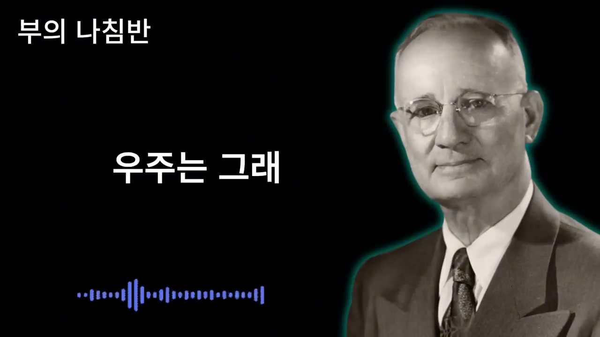
영상 중반부는 잠재의식과 끌어당김의 법칙을 중심으로 전환된다. 성공한 사람들은 죽을 만큼 힘들어도 남 앞에서 죽는 소리를 하지 않는다고 한다. 그들은 이 냉혹한 우주에 반드시 지켜야 할 절대 법칙이 있으며, 그 법칙을 거스르면 파멸한다고 본다는 것이다.
나폴레온 힐이 발견했다는 진리는 “잠재의식은 현실과 상상을 구별하지 못한다”는 주장이다. 뇌는 실제로 부자인지, 부자인 척 연기하는지 알지 못한다. 다만 말, 행동, 감정의 진동을 받아들여 현실로 창조해낼 뿐이라고 한다. 우주는 거대한 거울과 같아서 내가 울상을 지으면 세상도 울상을 돌려주고, 가난하다고 소리치면 더 큰 가난을 안겨준다고 설명한다.
따라서 의도적으로 현실을 왜곡해야 한다고 말한다. 통장 잔고가 바닥을 치더라도 마음의 잔고는 넘쳐흐르는 것처럼 행동해야 한다. 온몸이 아프고 수십 년을 살아 지쳤더라도 펄펄 나는 청춘처럼 활기차게 걸어야 한다. 이것은 거짓말이 아니라 미래의 현실을 현재로 끌어오는 의식이며 확고한 믿음의 실천이라고 규정된다.
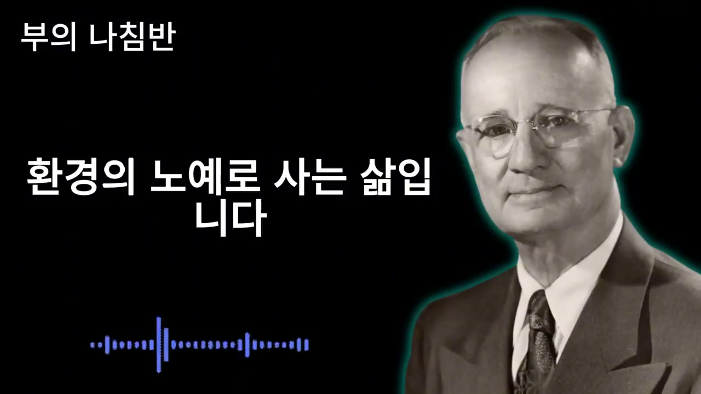
대부분의 사람은 눈에 보이는 현실만을 진실로 믿는다. 상황이 나쁘면 풀이 죽고, 상황이 좋아야만 웃는다. 화자는 이것을 환경의 노예로 사는 삶이라고 말한다. 반대로 진정한 지배자는 보이지 않는 것을 보는 사람이다. 아직 오지 않은 성공을 이미 온 것처럼 믿고 행동하는 사람이라는 것이다.
이 원리에 따라 결핍을 숨기고 풍요를 연기하라고 한다. 불안을 감추고 평온을 가장하라고 한다. 그러면 상대는 나에게서 뿜어져 나오는 여유롭고 당당한 기운에 압도된다. 사람들은 실제 돈의 액수보다 태도의 크기를 본다. 왕처럼 행동하면 왕으로 대접하고, 거지처럼 구걸하면 동전 몇 푼과 격려만 받을 것이라는 비유가 등장한다.
이 구간은 영상의 “연기론”을 강화한다. 위장술은 타인을 해치기 위한 기만이 아니라 나약한 자아로부터 위대한 잠재력을 보호하는 방패다. 부정적 현실이 내면을 잠식하지 못하도록 막아내는 철벽이며, 반복되면 가면이 아니라 진짜 얼굴이 된다고 말한다.
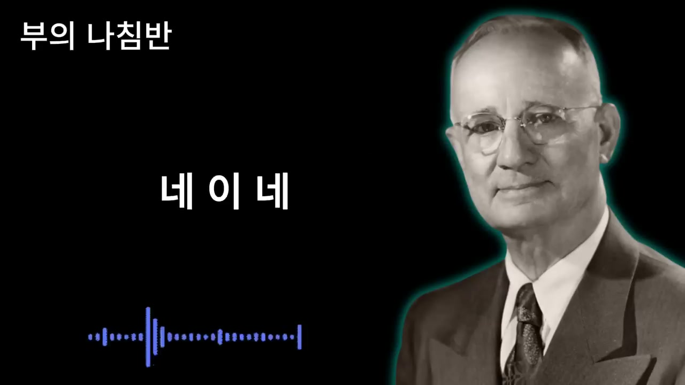
영상은 이론 설명 뒤 구체적인 네 가지 지침으로 들어간다. 특히 가족이나 가까운 친구에게도 절대 말해서는 안 되는 금기라고 강조한다. 이것을 입 밖으로 꺼내는 순간 쌓아올린 공든 탑이 무너진다고 한다.
첫째, 돈 주머니 사정을 속여야 한다. 돈이 많다고 자랑하지도 말고, 없다고 징징대지도 말아야 한다. 부자임을 드러내면 사기꾼과 탐욕스러운 사람들이 몰려와 영혼까지 갈아먹을 수 있다고 한다. 반대로 빈털터리임을 드러내면 사람들은 나를 무능한 존재로 낙인찍고 멸시한다. 따라서 재산 규모는 누구도 가늠하지 못하게 해야 하며, 경제력은 오직 통장만 알고 있어야 한다.
둘째, 병과 약점을 속여야 한다. 52세가 넘어가면 여기저기 아픈 곳이 생길 수 있지만, 그것을 말버릇처럼 호소하지 말라고 한다. 타인은 걱정하는 척하지만 무의식적으로는 시들어가는 고목나무, 병든 사자처럼 취급한다. 병든 사자에게 복종하는 이는 없으므로, 아파도 허리를 세우고 눈에 총기를 띠어야 한다. 강건한 척 연기하면 뇌가 착각을 일으켜 통증을 억제하고 면역력과 관련된 호르몬을 분비한다고 설명한다.
셋째, 목표와 계획을 숨겨야 한다. 나폴레온 힐은 명확한 목표를 가지라고 했지 떠벌리라고 하지 않았다고 한다. 목표를 말하면 에너지가 분산되고, 주변 사람들은 질투와 불안에서 나온 부정적 말로 방해한다. 결과가 나올 때까지 입을 다물고 조용히 준비해야 하며, 침묵은 계획을 자라게 하는 인큐베이터라고 표현한다. 말보다 행동으로 보여주는 자만이 진정한 카리스마를 가진다.
넷째, 가정사를 발설하지 말아야 한다. 배우자의 흉, 자식의 허물, 집안 불화를 남에게 말하는 것은 자기 얼굴에 침을 뱉는 짓이라고 한다. 상대는 흥미진진한 드라마처럼 듣고, 뒤에서는 가정을 건사하지 못하는 사람이라고 비웃을 수 있다. 집안 문제는 집안에서 해결해야 하며, 밖에서는 화목하고 평화로운 가장처럼 행동해야 한다. 행복한 가정을 꾸리는 사람에게 신용이 붙는다는 것이 이 구간의 결론이다.
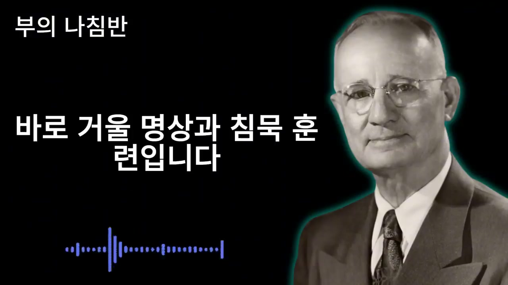
네 가지를 실천하는 구체적 방법은 거울 명상과 침묵 훈련이다. 매일 아침 거울을 보며 눈빛에서 불안을 지우고, 입가에 여유로운 미소를 띠는 연습을 하라고 한다. 이것은 단순한 표정 관리가 아니라 새로운 정체성을 몸에 입히는 훈련이다.
또 사람을 만날 때 평소보다 말수를 절반으로 줄이라고 한다. 말을 아끼고 의미심장한 미소로 답하면 상대는 속을 읽을 수 없어 안달이 난다고 설명한다. 내가 침묵할수록 내 가치는 올라간다. 말이 많을수록 패가 드러나고, 말이 적을수록 신비감과 긴장감이 생긴다는 논리다.
스크린샷 구성도 이러한 메시지를 뒷받침한다. 검은 배경과 나폴레온 힐 초상, 짧고 큰 흰색 문장은 “침묵”, “우주”, “반복” 같은 단어를 의식처럼 강조한다. 시각적으로는 정보 그래픽보다 명령문과 상징 이미지를 반복해 청자에게 암시를 거는 형식에 가깝다.
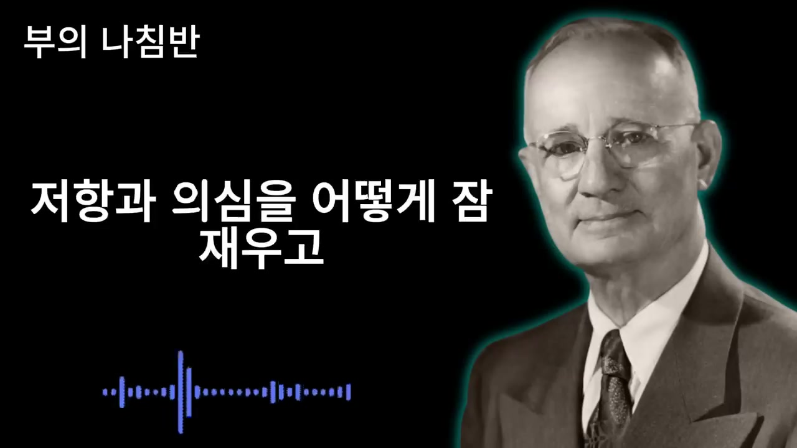
새로운 가면을 쓰고 세상에 나가면 강한 내적 저항에 부딪힌다고 한다. 평생 솔직하게 살아온 사람에게는 거짓말을 하고 있다는 죄책감이 밀려올 수 있다. “이렇게까지 해서 살아야 하나”라는 자괴감도 들 수 있다.
화자는 이것을 변화의 장애물로 작동하는 뇌의 간사한 속임수라고 해석한다. 이 고비를 넘지 못하면 다시 예전의 초라한 모습으로 돌아간다. 내면에서는 “이건 가짜야”, “나는 거짓말쟁이야”, “사람들을 속이고 있어”라는 날카로운 비명 같은 소리가 들린다. 하지만 그런 거부감은 너무나 당연하며, 맞지 않는 옷을 억지로 입은 것처럼 불편한 상태라고 설명한다.
이어지는 구간에서는 뇌가 익숙한 예전 모습을 안전하게 느낀다고 말한다. 실패하고 가난해도 마음 편한 자리로 돌아가라고 유혹하는 소리는 양심이 아니라 실패의 구렁텅이에 가둬두려는 내면의 부정적 힘이라고 한다. 나폴레온 힐의 표현처럼 이것을 “최면적 리듬”이라 부르며, 지난 수십 년의 패배자적 생각과 행동이 뇌에 편안한 상태로 각인되었다고 설명한다.
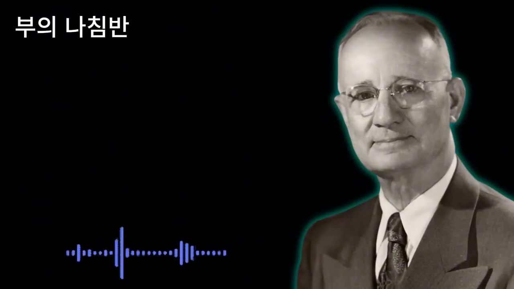
내적 죄책감을 이기는 논리로 배우의 비유가 등장한다. 배우가 무대에서 왕을 연기한다고 해서 그를 사기꾼이라고 비난하지 않는다. 그는 관객에게 감동과 영감을 주기 위해 본래 모습을 잠시 지우고 새로운 인격을 창조하는 예술가다. 화자는 청자도 마찬가지로 인생이라는 거대한 드라마를 다시 쓰는 작가이자 주연 배우라고 말한다.
풍요와 강인함을 연기하는 것은 남을 해치기 위한 사기가 아니다. 잠재의식에 새로운 명령어를 입력하는 성스러운 의식이다. 거짓말이라고 생각하지 말고, 미래의 진실을 미리 가져와 연습하는 리허설로 보라고 한다.
씨앗의 비유도 등장한다. 작고 볼품없는 껍질 속에 거대한 참나무가 숨어 있다는 사실이 눈에 보이지 않는다고 해서 거짓은 아니다. 현재 모습이 초라한 씨앗 같아도 내면에는 성공의 유전자가 잠자고 있다. “나는 부자다”, “나는 건강하다”라고 선언할 때마다 잠재의식은 그 말을 진실로 받아들이기 위해 우주의 에너지를 끌어당긴다고 말한다.
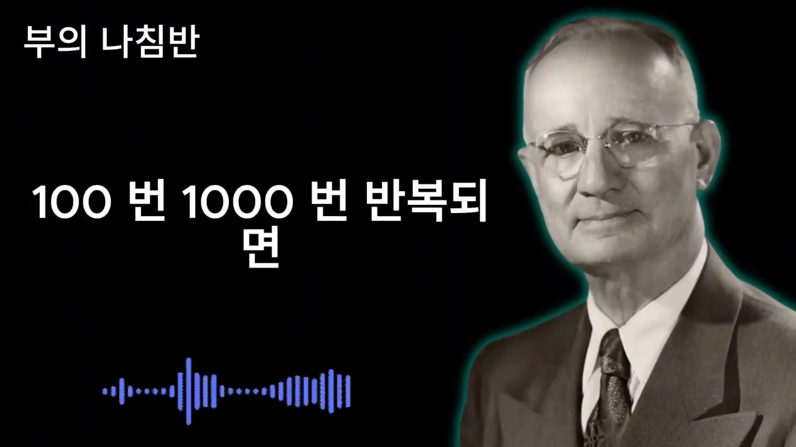
대다수 99%의 사람들은 이 불편함을 견디지 못하고 “예전대로 살자”라며 포기한다고 한다. 그리고 죽을 때까지 남의 눈치나 보며 가난하게 늙어간다고 묘사한다. 반면 상위 1%의 승리자들은 이 불편함을 성장의 신호로 받아들인다. 근육이 찢어지는 고통이 있어야 더 크고 단단한 근육이 생기듯, 자아가 찢어지는 이질감이 있어야 더 강한 자아가 탄생한다고 한다.
중요한 것은 멈추지 않고 계속하는 것이다. 아침에 눈을 뜨자마자 거울 속 자신에게 최면을 걸고, 뻔뻔해지라고 말한다. 세상이 나를 속여왔는데 나라고 세상을 속이지 못할 이유가 무엇이냐는 도발적 질문도 나온다. 여기서 말하는 속임은 다시 한번, 가난과 무력함이라는 낡은 최면을 깨고 성공과 풍요라는 새로운 최면을 거는 행위로 재정의된다.
처음에는 입안에서 맴돌던 긍정 선언이 100번, 1000번 반복되면 뇌에 각인된다. 그러면 무의식적 행동으로 나오고, 더 이상 연기가 아니라 자신의 모습이 되는 기적을 경험한다고 한다. “101만 버티라”는 표현이 나오는데, 정확한 의미는 “조금만 더, 마지막 고비만 더 버티라”는 강조로 읽힌다.
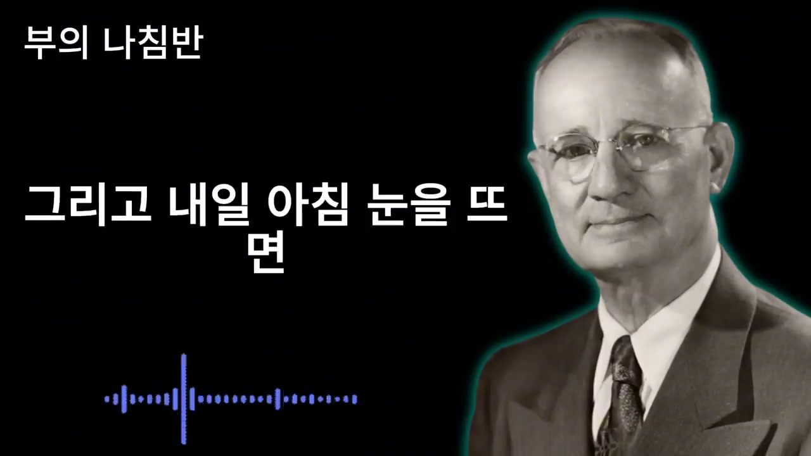
영상은 변화 이후의 모습을 상상하게 만든다. 치열한 내적 투쟁 끝에 과거의 낡은 껍질을 완전히 벗어던지게 된다고 한다. 거울 앞에 섰을 때 더 이상 늙고 지친 패배자가 아니라, 낯설지만 눈부시게 빛나는 한 사람을 마주하게 된다는 이미지가 제시된다.
그 사람은 과거의 나약하고 눈치 보던 사람이 아니다. 수십 년간 자신을 매장하던 가난과 패배자의 멍에를 끊어내고 새롭게 태어난 존재다. 인생이라는 무대를 장악한 주연 배우이자 자기 운명을 개척하는 창조자다. 눈빛은 깊고 고요한 호수처럼 흔들림이 없고, 인내는 세상의 풍파를 웃어넘길 듯한 여유로 가득 차 있다고 묘사한다.
이 변화는 관계의 역전으로 이어진다. 예전에는 내가 사람들을 찾아다니며 구걸하듯 관계를 맺으려 했다면, 이제는 사람들이 나의 지혜와 기운을 얻기 위해 줄을 선다고 말한다. 지갑을 열지 않아도 귀티와 풍요의 에너지에 압도되어 곁에 머물기를 간청한다는 표현도 등장한다. 이것이 99%가 도달하지 못하는 상위 1%의 삶이라고 한다.
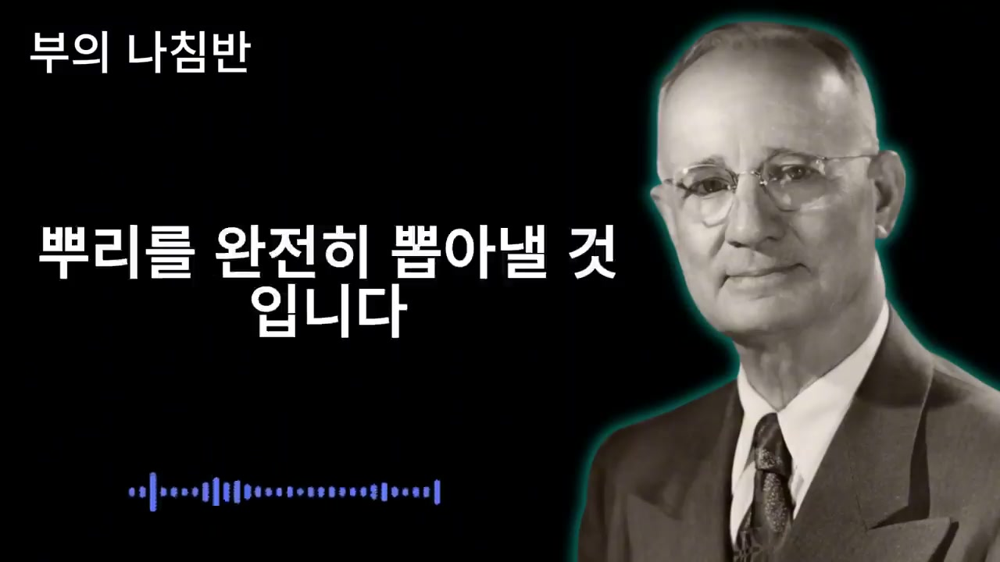
마지막 부분은 행동 촉구로 구성된다. 모든 깨달음을 그냥 듣고 흘려버리면 신기루처럼 사라지므로, 무의식에 영원히 각인시키고 우주와 계약을 맺는 의식이 필요하다고 말한다. 그것이 바로 댓글 작성이다.
화자는 댓글 창을 단순한 인터넷 공간이 아니라 내면과 우주가 만나는 접점, 새롭게 태어남을 알리는 성스러운 계약서라고 표현한다. 눈으로만 보지 말고 손가락을 움직여 확인을 남기라고 한다. 직접 쓴 글자가 망막을 통해 뇌리에 박히는 순간 인생 궤도가 180도 바뀌기 시작한다고 한다.
제시된 문장은 두 가지다. “나는 침묵함으로써 강해지고 감춤으로써 위대해진다.” 또는 “나는 나의 입을 다스려 천하를 내 편으로 만든다.” 이 짧은 문장을 쓰는 행위가 무의식 깊은 곳에 깔린 가난과 패배의 뿌리를 뽑아낼 것이라고 말한다. 또한 다른 사람들의 댓글을 읽고 마음속으로 응원하면 긍정 에너지가 배가 되어 더 큰 축복으로 돌아온다고 한다.
“이제 착한 사람 콤플렉스에서 벗어나야 합니다.”
“인생의 후반전에 들어선 당신에게 필요한 것은 무방비 상태의 솔직함이 아니라 고도의 지혜가 담긴 위장술입니다.”
“가난한 마음과 불안한 눈빛, 초라한 현실을 있는 그대로 드러내는 것은 겸손이 아니라 자살행위입니다.”
“당신의 약점을 철저히 속이십시오. 당신의 결핍을 완벽하게 감추십시오.”
“세상은 당신의 사정에 관심이 없습니다. 사람들은 오직 당신이 그들에게 무엇을 줄 수 있는가에만 관심이 있습니다.”
“입 밖으로 내뱉는 부정적인 말들은 강력한 자기 암시가 되어 잠재의식에 실패자의 정체성을 새겨 버립니다.”
“우리의 잠재의식은 현실과 상상을 구별하지 못합니다.”
“당신이 왕처럼 행동하면 사람들은 당신을 왕으로 대접합니다.”
“습관이 성격이 되고 성격이 운명이 됩니다.”
“첫째, 당신의 돈 주머니 사정을 철저히 속이십시오.”
“둘째, 당신의 병과 약점을 속이십시오.”
“셋째, 당신의 목표와 계획을 완벽하게 숨기십시오.”
“넷째, 당신의 가정사를 절대로 발설하지 마십시오.”
“침묵은 당신의 계획을 무럭무럭 자라게 하는 인큐베이터입니다.”
“당신이 침묵할수록 당신의 가치는 올라갑니다.”
“배우가 무대 위에서 왕을 연기한다고 해서 그를 사기꾼이라고 비난합니까?”
“당신의 가난과 무력함은 세상이 주입한 거짓된 최면이었습니다.”
“나는 침묵함으로써 강해지고 감춤으로써 위대해진다.”
“나는 나의 입을 다스려 천하를 내 편으로 만든다.”
이 영상의 핵심 메시지는 인간관계에서 모든 것을 솔직히 드러내는 태도가 반드시 선하거나 현명한 것은 아니라는 주장이다. 특히 돈, 건강, 목표, 가정사처럼 나의 취약성과 사적 기반을 드러내는 정보는 타인의 평가, 질투, 이용, 멸시를 부를 수 있으므로 철저히 관리해야 한다고 말한다. 화자는 이를 “거짓말”이 아니라 자기 존엄과 미래의 가능성을 지키는 위장술로 재정의한다.
실용적 시사점은 정보 공개의 절제다. 누구에게나 모든 사정을 말하지 않고, 나의 경제력·건강상태·계획·가정문제를 필요 이상으로 노출하지 않는 태도는 실제 인간관계에서도 어느 정도 현실적 조언으로 볼 수 있다. 또한 반복적인 신세 한탄과 부정적 자기표현이 사람의 인상과 관계를 약화시킬 수 있다는 지적도 타당한 부분이 있다. 말수 조절, 감정 절제, 계획의 비공개, 성급한 자기 노출의 자제는 관계 전략으로 의미가 있다.
다만 영상은 세상을 매우 냉혹하고 경쟁적으로 해석하며, 약점을 보이면 곧바로 먹잇감이 된다는 식의 극단적 표현을 많이 사용한다. 따라서 내용을 문자 그대로 “모든 사람을 속이라”는 윤리 없는 기만으로 받아들이기보다는, 자기 정보를 무분별하게 공개하지 말고 스스로를 패배자로 규정하는 언어를 줄이라는 메시지로 해석하는 편이 더 건설적이다. 신뢰할 수 있는 가까운 관계와 전문적 도움까지 모두 차단하는 방식으로 받아들이면 오히려 고립될 수 있다.
결국 이 영상은 “입을 다스리는 사람은 관계와 운명을 다스릴 수 있다”는 메시지로 정리된다. 말은 단순한 소리가 아니라 자기 이미지, 타인의 평가, 잠재의식의 방향을 결정하는 도구로 다뤄진다. 그러므로 돈을 자랑하지도 하소연하지도 않고, 아픔을 습관처럼 떠벌리지 않고, 목표는 결과로 증명하며, 가정사는 사적으로 해결하고, 매일 거울 앞에서 더 강한 자기를 연습하라는 것이 전체 결론이다.
댓글
GitHub 이슈 기반 댓글 시스템입니다.